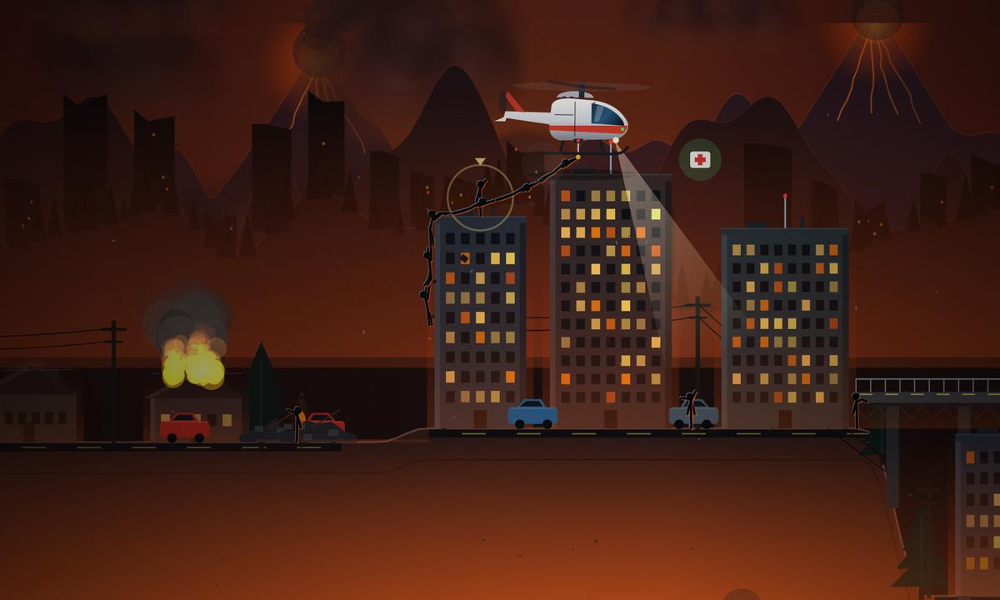

Thirteen projects — a 153-topic physics lab, four browser games built from nothing, an interactive 3D prayer guide, a healthcare booking platform, a CNN that reads handwriting, cloud infrastructure, and sixty programs written twice.
Latest

Solo build · Browser game · JavaScript & Matter.js
Lava Lift
A volcano is erupting and the lava keeps rising. Fly a rescue helicopter, pick up stranded survivors and carry them to a camp on the mountain — not inside the cabin, but as a swinging human chain below it, each survivor a six-part physics ragdoll holding the ankles of the one above. Carry too many or fly too rough and the chain snaps.
Solo build · Interactive 3D web app · React & Three.js
Learn Salah
Don't just read how to pray — see it. A faceless 3D figure, generated entirely in code, performs each movement of the Islamic prayer while the instructions, Arabic, transliteration and translation stay in sync beside it. All five daily prayers, four madhhabs side by side, in English, বাংলা and العربية.
React 19TypeScriptThree.jsReact Three FiberTailwind CSS 4ZustandVite0 model files
Solo build · 3D browser game · TypeScript & Three.js
Dhakar Rasta
A 3D game about surviving Dhaka traffic, entirely in Bangla. Wrong-way rickshaws, buses that stop anywhere, people crossing under a perfectly good footbridge — and a fairness system that guarantees every hazard can be avoided. Every vehicle, building and sound is generated in code.
Solo build · Interactive education · React & Three.js
Zadeed's Physics Lab
An interactive 3D laboratory covering the entire Bangladesh HSC Physics syllabus — 153 topics across both papers, where every slider changes real physics and every number on screen comes from the equations. Bilingual, phone-first, and gated behind 308 automated tests.
ReactTypeScriptThree.jsViteTailwind CSS153 topics115 simulations308 testsEN · বাংলা
A browser parkour platformer with no enemies, no weapons and no asset files. Three hand-designed levels, a twelve-move movement system, and every tile, sprite, sound and UI glyph generated in code at boot — 28 kB gzipped on top of the engine.
Snake rebuilt in real 3D in the browser — a neon arena drawn with custom shaders, a snake made of instanced geometry, and a soundtrack synthesised as it plays. No models, textures or sound files anywhere in the project: every pixel and every note is generated in code.
React 19TypeScriptThree.jsReact Three FiberGLSLWeb AudioVite380 kB gzipped
A system that reads handwritten numbers from images. It splits each image into digits, recognises each digit with a custom CNN, and joins the results. It reaches 89% exact-match accuracy on 2,000 test images, and comes with an interactive web app.
A multi-hospital healthcare booking platform for Bangladesh. Patients find verified doctors by specialty and location and book real time slots; hospitals and doctors are approved through a two-step review; doctors run consultations and issue prescriptions — with a separate dashboard for each of four roles.
A keyboard-driven promotional prize wheel for an in-store campaign: space to spin, then type a name to claim the prize. One weight per prize sets both the slice size and the real odds, and the spin solves for where it must stop before it starts turning — so the wheel can never lie about the odds.
01–20 Fundamentals21–40 Object-oriented41–60 Data structures
Personal challenge · C++ & Java · complete
60 Projects Challenge
Sixty programs in three escalating tiers — fundamentals, object-oriented design, then data structures and algorithms. Every one is written twice, in C++ and in Java, from a menu-driven calculator to a min heap measured against Floyd's O(N) build.
A custom VPC across two Availability Zones with public and private subnets, a bastion host into private resources, a MySQL database, and locked-down security groups and IAM.
AWSEC2VPCIAMMySQL
Design · Wadeye, NT
Flood-Resilience Raft
A low-cost floating household raft for a remote Indigenous community facing flood isolation — drum flotation, bamboo frame, solar power, and sensors for water, temperature, GPS, tilt and SOS.
Design thinkingSensorsLow-costCommunity
Web · HTML & CSS
Web Projects
Semantic, responsive sites with validated forms and tables, published on GitHub Pages — plus the About page, structure and styling for a team cybersecurity website.